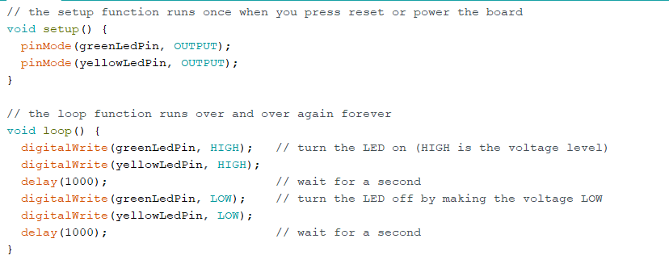

In this exercise, we get the taste of how to set up two LED lights. Afterwards, i tried to make both green and yellow lights
blink at the same time. The code for this exercise is very straight forward; where you put both the voltage level of green and yellow
lights the same. They should be HIGH or LOW at the same time.

Ex.4: Fade LED - Analog output
c. Extend the code so that one LED slowly fades in and the other fades out at the same time
Ex.6: Controlling a LED with a potmeter
c. Change the code so that one LED fades in while the other fades out and vice versa.
Ex.7: LED matrix
a. smiley face & frowney face alternate every second
Ex.8: Control the LED with light
Ex.9: Sound
c. Make a siren
Ex.11: Distance
c. yellow LED start blinking when
something is within 50 cm from the sensor
Ex.12: Arduino and Processing
d. size of the circle is determined by input of the sensor